La juez reprocha la falta de atención al conductor , al que retira un año el carnet.
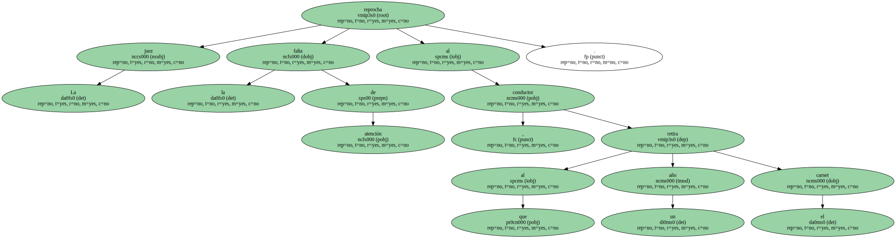El acusado deberá indemnizar a los padres de la menor con casi 20 millones.
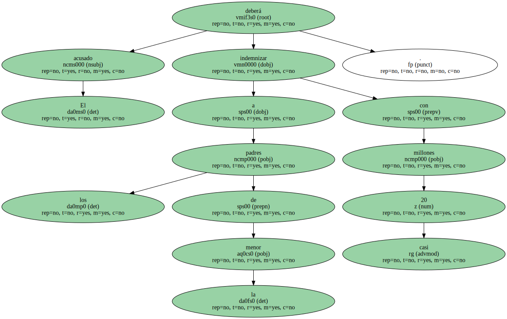El accidente que causó la muerte de una niña en el cruce de la calle de Aragó con el paseo de Gràcia , frente al antiguo Fashion Café , se ha saldado con una multa de 120.000 pesetas , un año de retirada del carnet y una indemnización de 19,7 millones de pesetas.
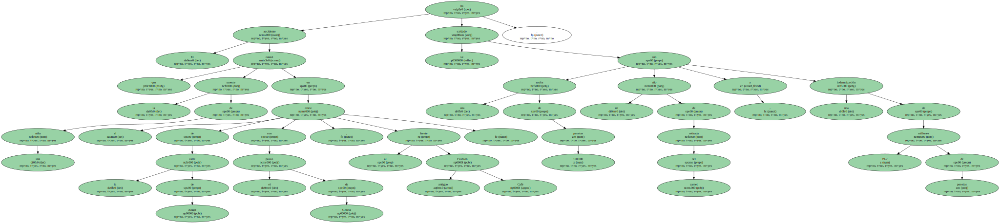La simbólica pena no ha causado sorpresa , ya que el conductor ha sido condenado por una falta de imprudencia leve , después de que la Audiencia de Barcelona desestimara el recurso del fiscal , que insistió en que el atropello mortal debía ser considerado un delito de homicidio por imprudencia.
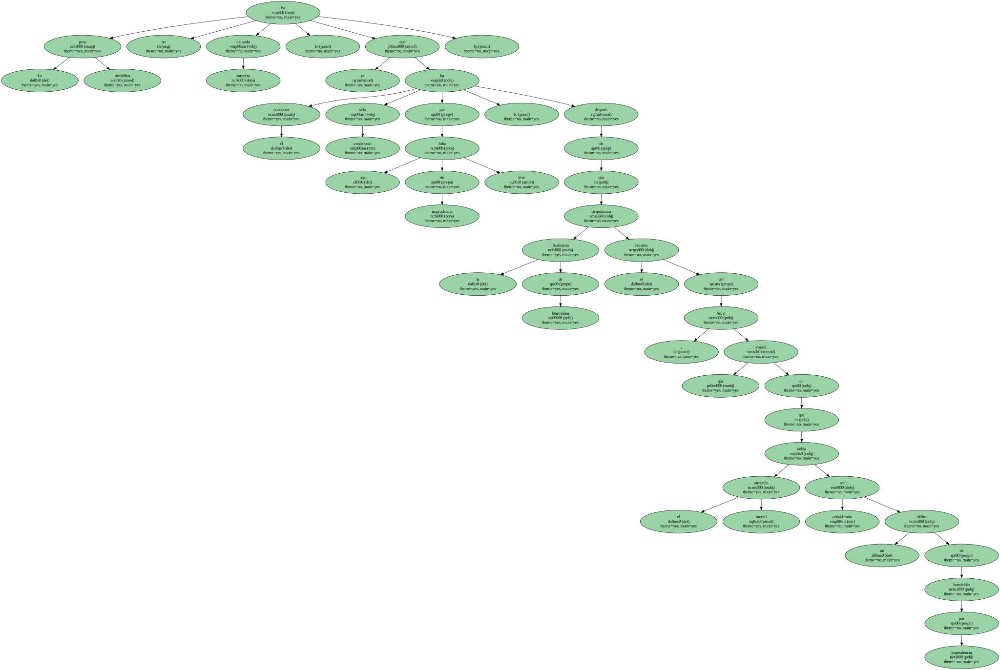Los hechos ocurrieron el 28 de noviembre de 1997 , cuando el conductor Eloy V. M. , de 22 años , que circulaba por la calle de Aragó , se distrajo al llegar al paseo de Gràcia.
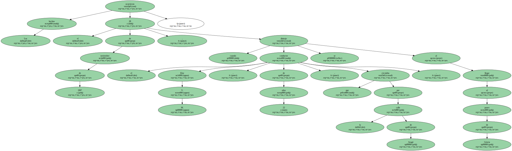El automovilista chocó con el bordillo , se subió a la acera y , tras arrancar una papelera , atropelló a tres niños que esperaban junto al semáforo para cruzar la calle.
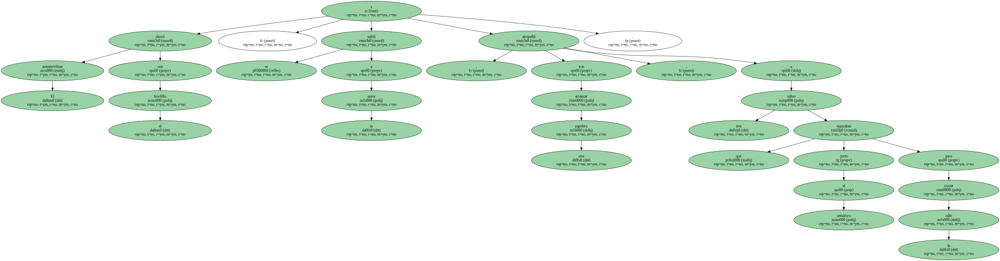La niña Julia B. M. , de 13 años , resultó muerta , y sus dos compañeros , Mauro G. y Alvaro G. , heridos de consideración.
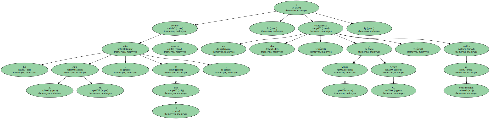La sentencia de la juez de instrucción número 21 , María del Carmen Suárez , afirma que el imputado " no adoptó las medidas de atención exigibles en la conducción " , por lo que perdió el control del coche.
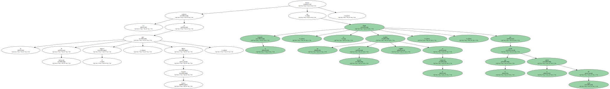La magistrada descarta que el accidente se produjera por cualquier otra causa " que no fuera el descontrol del vehículo ".
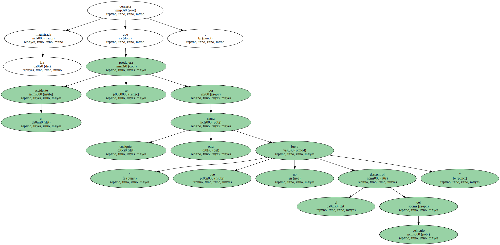La sentencia señala también que no existió ningún fallo mecánico en el coche susceptible de haber provocado el trágico suceso.
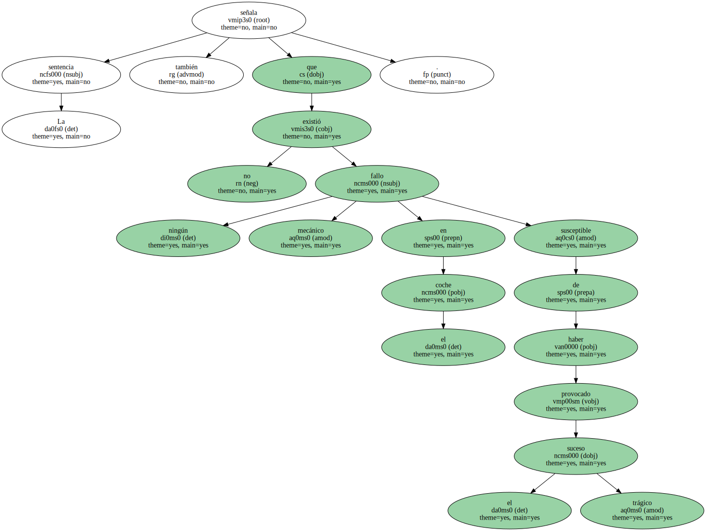Polémica por un anuncio.

El accidente originó una agria polémica , después de que el juez de guardia Ramon Gomis , que practicó el levantamiento del cadáver de la niña , atribuyera el atropello a un despiste del conductor producido por un sugestivo anuncio de lencería femenina que se exhibía en el escaparate del desaparecido restaurante Fashion Café.
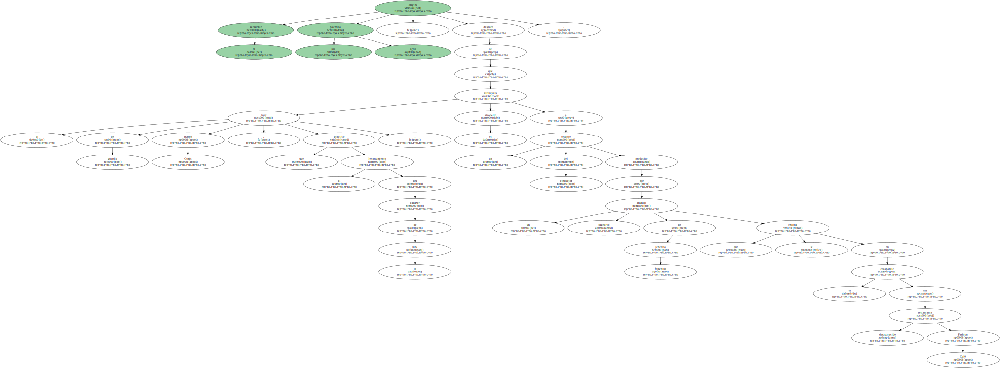Esta hipótesis quedó después descartada.
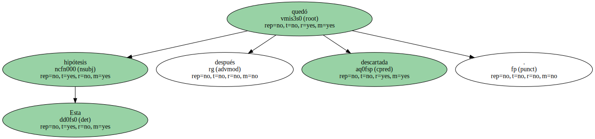La sentencia reprocha al acusado su falta de cuidado al volante.
El fallo añade que el conductor debe ser el " garante del riesgo emprendido , exigiéndosele la anticipación del instante , en los parámetros del denominado hombre medio ".
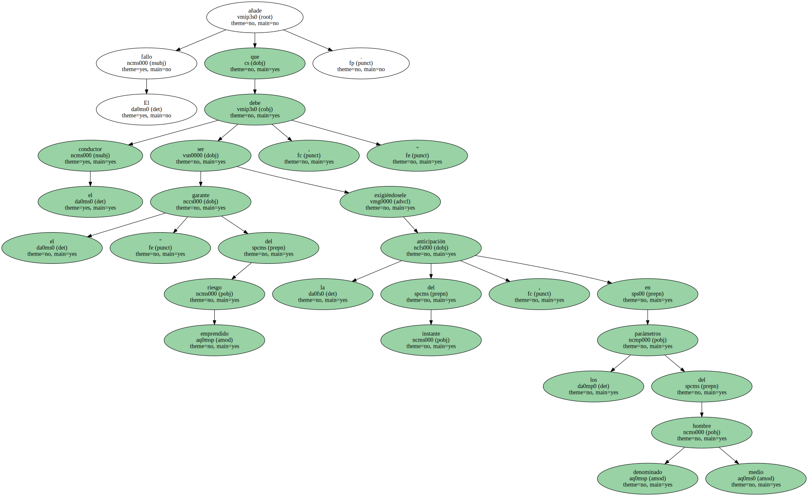La juez Suárez entiende que " tal anticipación no fue prevista " por el acusado cuando se iba a incorporar al paseo de Gràcia , ya que " no adoptó las medidas de atención exigibles " , lo que " determinó que perdiera el control de su vehículo " , atropellando a continuación a los tres menores que se dirigían a la escuela.
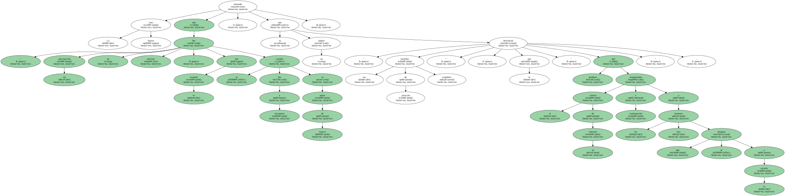El fiscal siempre calificó los hechos como un delito de homicidio con imprudencia , que prevé penas de uno a cuatro años de prisión , y otros dos delitos de lesiones.
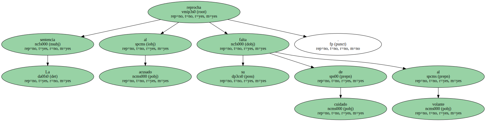La tesis de la acusación pública fue desestimada tanto por el juez instructor como por la Audiencia de Barcelona , que ordenaron que el caso fuese juzgado por una falta de imprudencia leve con resultado de muerte y lesiones.
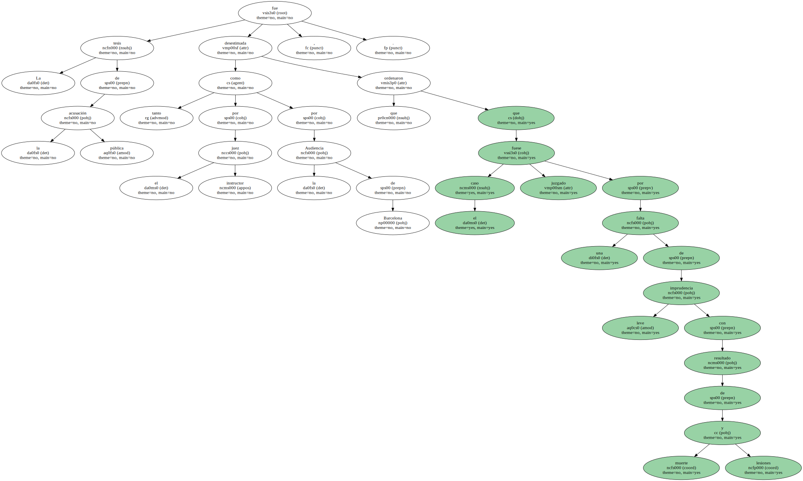El instructor y la Audiencia consideraron que en el suceso confluyeron un cúmulo de circunstancias negativas.
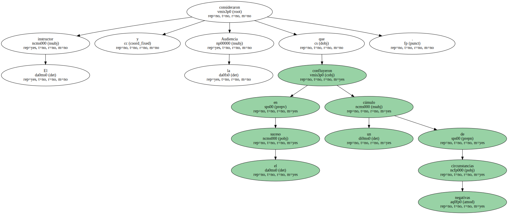Además de la distracción del conductor , el coche , en lugar de frenar , aceleró , se reventó una rueda del vehículo y la dirección de éste resultó afectada.
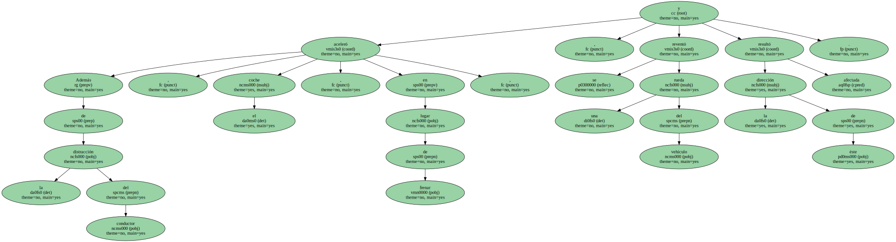Las anteriores circunstancias hicieron descartar que el conductor incurriera en una conducta temeraria.
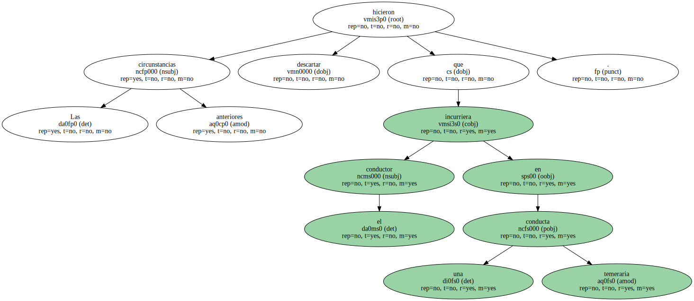Además , dio negativo en el test de alcoholemia.
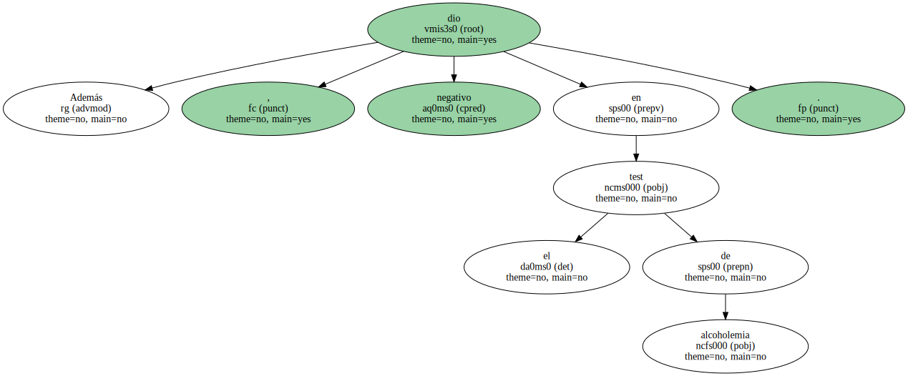La ley castiga con multa de uno a dos meses la imprudencia leve con resultado de muerte , y con multa de 15 a 30 días la imprudencia con resultado de lesiones.
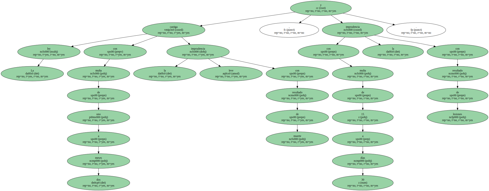La magistrada fija una indemnización de 19,7 millones de pesetas para los familiares de la niña fallecida y 813.000 pesetas para uno de los otros dos niños que resultaron heridos.
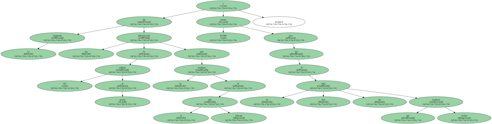La sentencia señala que los padres del tercer menor accidentado renunciaron expresamente al ejercicio de las acciones civiles porque fueron " debidamente " indemnizados.

Uno de los heridos precisó 109 días para su curación , mientras que el otro sufre como secuelas limitación al flexionar la rodilla derecha y una deformidad en la clavícula izquierda.
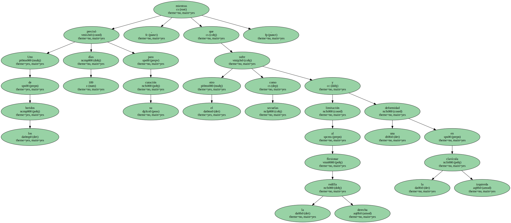